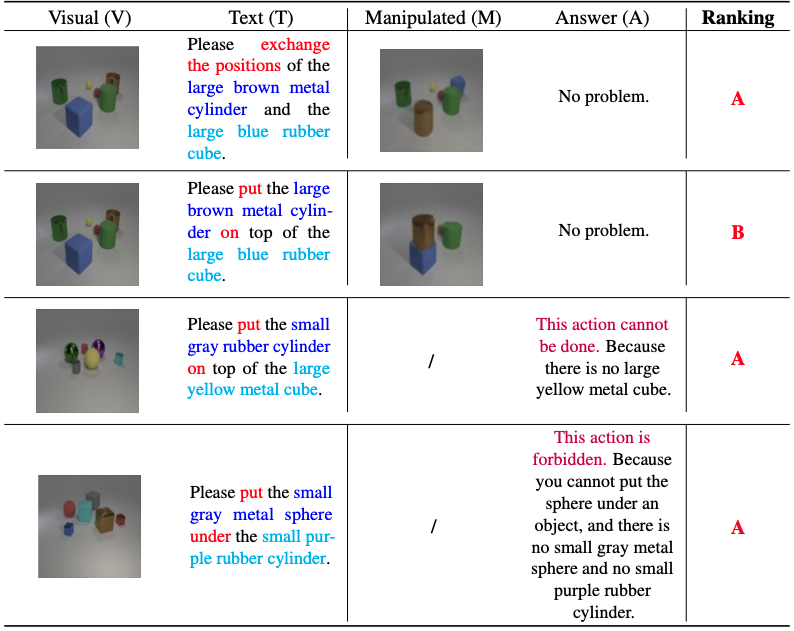

Accountable Text-based Visual Re-creation
Zhiwei Zhang
12
*
Yuliang Liu
123
*
Hongsheng Li
12✉
Dahua Lin
12✉
1
The Chinese University of Hong Kong
2
Huazhong University of Science and Technology
3
Centre for Perceptual and Interactive Intelligence

Code and Model
Datasets